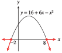

Section 6.5 Quadratic Inequalities
Subsection Solving Inequalities Graphically
In Chapter 1, we used graphs to solve equations and inequalities. The graphing technique is especially helpful for solving quadratic inequalities.
Example 6.89.
The Chamber of Commerce in River City plans to put on a Fourth of July fireworks display. City regulations require that fireworks at public gatherings explode higher than \(800\) feet above the ground. The mayor particularly wants to include the Freedom Starburst model, which is launched from the ground. Its height after t seconds is given by
When should the Starburst explode in order to satisfy the safety regulation?
We can get an approximate answer to this question by looking at the graph of the rocket's height, shown below.

When is the rocket's height greater than 800 feet, or, in mathematical terms, for what values of \(t\) is \(h \gt 800\text{?}\) The answer to this question is the solution of the inequality
Points on the graph with \(h \gt 800\) are shown in color, and the \(t\)-coordinates of those points are marked on the horizontal axis. If the Freedom Starburst explodes at any of these times, it will satisfy the safety regulation.
From the graph, the safe time interval runs from approximately \(4.25\) seconds to \(11.75\) seconds after launch. The solution of the inequality is the set of all \(t\)-values greater than \(4.25\) but less than \(11.75\text{.}\)
Note 6.90.
The solution set in Example 6.89 is called a compound inequality, because it involves more than one inequality symbol. We write this set as
and read "\(t\) greater than \(4.25\) but less than \(11.75\text{.}\)"
Checkpoint 6.91. QuickCheck 1.
Technology 6.92. Solving an Inequality With a Graphing Calculator.
You can use your graphing calculator to solve the problem in Example 6.89. Graph the two functions
on the same screen. Use WINDOW settings to match the graph in Example 6.89.

Then use the intersect feature to find the \(x\)-coordinates of the points where the two graphs intersect (there are two of them). These points will have \(y\)-coordinates of \(800\text{.}\) The parabola is above the line, so \(h \gt 800\) when \(t\) is between these two \(x\)-values. To two decimal places, you can see that \(h \gt 800\) when \(4.26 \lt t \lt 11.74\text{.}\)
Checkpoint 6.93. Practice 1.
A graph for part (a):
In Example 6.89, we solved the inequality \(256t - 16t^2 \gt 800\) by comparing points on the graph of \(h = 256 - 16t^2\) with points on the line \(h = 800\text{.}\) If one side of an inequality is zero, we can compare points on the graph with the line \(y = 0\text{,}\) which is the \(x\)-axis.
Example 6.94.
Consider the graph of \(y = x^2 - 4\text{.}\) Find the solutions of the following equations and inequalities.
\(\displaystyle x^2 - 4 = 0\)
\(\displaystyle x^2 - 4 \lt 0\)
\(\displaystyle x^2 - 4 \gt 0\)
Look at the graph of \(y = x^2 - 4\) shown below. When we substitute a value of \(x\) into the expression \(x^2 - 4\text{,}\) the result is either positive, negative, or zero.
(You can see this more clearly if you compute a few values yourself to complete the table below. Your table should agree with the coordinates of points on the graph.)
| \(x\) | \(-3\) | \(-2\) | \(-1\) | \(0\) | \(1\) | \(2\) | \(3\) |
| \(y\) | \(\hphantom{bla}\) | \(\hphantom{bla}\) | \(\hphantom{bla}\) | \(\hphantom{bla}\) | \(\hphantom{bla}\) | \(\hphantom{bla}\) | \(\hphantom{bla}\) |
We will use the graph to solve the given equation and inequalities.
First, locate the two points on the graph where \(y = 0\text{.}\) These points are \((-2, 0)\) and \((2, 0)\text{.}\) Their \(x\)-coordinates, \(-2\) and \(2\text{,}\) are the solutions of the equation \(x^2 - 4 = 0\text{.}\) The two points divide the \(x\)-axis into three sections, which are labeled on the graph. On each of these sections, the value of \(x^2 - 4\) is either always positive or always negative.
To solve \(x^2 - 4 \lt 0\text{,}\) find the points on the graph where \(y \lt 0\text{,}\) that is, below the \(x\)-axis. These points have \(x\)-coordinates between \(-2\) and \(2\) (labeled section II on the figure). Thus, the solution to the inequality \(x^2 - 4 \lt 0\) is \(-2 \lt x \lt 2\text{.}\)
To solve \(x^2 - 4 \gt 0\text{,}\) locate the points on the graph where \(y \gt 0\text{,}\) or above the \(x\)-axis. Points with positive \(y\)-values correspond to two sections of the \(x\)-axis, labeled I and III on the figure. In section I, \(x \lt -2\text{,}\) and in section III, \(x \gt 2\text{.}\) Thus, the solution to the inequality \(x^2 - 4 \gt 0\) includes all values of \(x\) for which either \(x \lt -2\) or \(x \gt 2\text{.}\)
Caution 6.95.
In Example 6.94, the solution of the inequality \(x^2 - 4 \gt 0\) is the set
This set is another type of compound inequality, and its graph consists of two pieces, as shown below.

The left piece of the set is \(x \lt -2\text{,}\) and the right piece is \(x \gt 2\text{.}\) It would be incorrect to describe the solution set as \(-2 \gt x \gt 2\text{,}\) because this notation implies that \(-2 \gt 2\text{.}\) We must write the solution as two parts: \(x \lt -2\) or \(x \gt 2\text{.}\)
Checkpoint 6.96. Practice 2.
Checkpoint 6.97. QuickCheck 2.
Because it is relatively easy to decide whether the \(y\)-coordinate of a point on a graph is positive or negative (the point lies above the \(x\)-axis or below the x-axis), we often rewrite a given inequality so that one side is zero.
Example 6.98.
Use a graph to solve \(x^2 - 2x - 3 \le 12\)
We first write the inequality with zero on one side:
We would like to find points on the graph of \(y = x^2 - 2x - 15\) that have \(y\)-coordinates less than or equal to zero. A graph of the equation is shown below.
You can check that the \(x\)-intercepts of the graph are \(-3\) and \(5\text{.}\) The points shown in red on the graph lie below the \(x\)-axis and have \(y \le 0\text{,}\) so the \(x\)-coordinates of these points are the solutions of the inequality. All of these points have \(x\)-coordinates between \(-3\) and \(5\text{.}\) Thus, the solution is \(-3\le x\le 5\text{,}\) or in interval notation, \([-3, 5]\text{.}\)

Checkpoint 6.99. Practice 3.
A graph for parts (b) and (c):

Checkpoint 6.100. Pause and Reflect.
Subsection Solving Quadratic Inequalities Algebraically
Although a graph is very helpful in solving inequalities, it is not completely necessary. Every quadratic inequality can be put into one of the forms
All we really need to know is whether the corresponding parabola \(y = ax^2 + bx + c\) opens upward or downward. Consider the parabolas shown below.

The parabola in figure (a) opens upward. It crosses the \(x\)-axis at two points, \(x = r_1\) and \(x = r_2\text{.}\) At these points, \(y = 0\text{.}\)
The graph lies below the \(x\)-axis between \(r_1\) and \(r_2\text{,}\) so the solutions to the inequality \(y\lt 0\) lie between \(r_1\) and \(r_2\text{.}\)
The graph lies above the \(x\)-axis for \(x\)-values less than \(r_1\) or greater than \(r_2\text{,}\) so the solutions to the inequality \(y\gt 0\) are \(x\lt r_1\) or \(x\gt r_2\text{.}\)
If the parabola opens downward, as in figure (b), the situation is reversed. The solutions to the inequality \(y\gt 0\) lie between the \(x\)-intercepts, and the solutions to \(y\lt 0\) lie outside the \(x\)-intercepts.
From the graphs, we see that the \(x\)-intercepts are the boundary points between the portions of the graph with positive \(y\)-coordinates and the portions with negative \(y\)-coordinates. To solve a quadratic inequality, we need only locate the \(x\)-intercepts of the corresponding graph and then decide which intervals of the \(x\)-axis produce the correct sign for \(y\text{.}\)
To Solve a Quadratic Inequality Algebraically:.
Write the inequality in standard form: One side is \(0\text{,}\) and the other has the form \(ax^2 + bx + c\text{.}\)
Find the \(x\)-intercepts of the graph of \(y = ax^2 + bx + c\) by setting \(y = 0\) and solving for \(x\text{.}\)
Make a rough sketch of the graph, using the sign of \(a\) to determine whether the parabola opens upward or downward.
Decide which intervals on the \(x\)-axis give the correct sign for \(y\text{.}\)
Example 6.101.
Solve the inequality \(36 + 6x - x^2\le 20\) algebraically.
-
We subtract \(20\) from both sides of the inequality so that we have \(0\) on the right side.
\begin{equation*} 16 + 6x - x^2\le 0 \end{equation*} -
Consider the equation \(y = 16 + 6x - x^2\text{.}\) To locate the \(x\)-intercepts, we set \(y = 0\) and solve for \(x\text{.}\)
\begin{align*} 16 + 6x - x^2 \amp= 0 \amp\amp \blert{\text{Multiply each term by }-1.}\\ x^2 - 6x - 16 \amp = 0 \amp\amp \blert{\text{Factor the left side.}}\\ (x - 8)(x + 2)\amp= 0\amp\amp \blert{\text{Apply the zero-factor principle.}}\\ x - 8 = 0 ~~~\text{ or }~~~x + 2 \amp= 0\\ x = 8 ~~~\text{ or }~~~ x \amp= -2 \end{align*}The \(x\)-intercepts are \(x = -2\) and \(x = 8\text{.}\)
-
Make a rough sketch of the graph of \(y = 16 + 6x - x^2\text{,}\) as shown below. Because \(a = -1 \lt 0\text{,}\) the graph is a parabola that opens downward.
 We are interested in points on the graph for which \(y\le 0\text{.}\) The points with negative \(y\)-coordinates (that is, points below the \(x\)-axis) lie outside the \(x\)-intercepts of the graph, so the solution of the inequality is \(x\le -2\) or \(x\ge 8\text{.}\) Or, using interval notation, the solution is \((-\infty,-2] \cup [8,\infty)\text{.}\)
Checkpoint 6.102. QuickCheck 3.
Caution 6.103.
Many people think that the inequality signs in the solution should point in the same direction as the sign in the original problem, and hence would incorrectly write the solution to Example 6.101 as \(x \le -2\) or \(x \le 8\text{.}\) However, you can see from the graph that this is incorrect. Remember that the graph of a quadratic equation is a parabola, not a straight line!
Checkpoint 6.104. Practice 4.
If we cannot find the \(x\)-intercepts of the graph by factoring or extraction of roots, we can use the quadratic formula.
Example 6.105.
TrailGear, Inc. manufactures camping equipment. The company finds that the profit from producing and selling \(x\) alpine parkas per month is given, in dollars, by
How many parkas should the company produce and sell each month if it must keep the profits above $\(2000\text{?}\)
-
We would like to solve the inequality
\begin{equation*} -0.8x^2 + 320x - 25,200\gt 2000 \end{equation*}or, subtracting \(2000\) from both sides,
\begin{equation*} -0.8x^2 + 320x - 27,200 \gt 0 \end{equation*} -
Consider the function
\begin{equation*} y = -0.8x^2 + 320x - 27,200 \end{equation*}We locate the \(x\)-intercepts of the graph by setting \(y = 0\) and solving for \(x\text{.}\) We will use the quadratic formula to solve the equation
\begin{equation*} -0.8x^2 + 320x - 27,200 = 0 \end{equation*}so \(a = \alert{-0.8}\text{,}\) \(b = \alert{320}\text{,}\) and \(c = \alert{-27,200}\text{.}\)
\begin{equation*} \begin{aligned}[t] x \amp=\frac{-(\alert{320})\pm\sqrt{(\alert{320})^2 - 4(-0.8)(\alert{-27,200})}} {2(\alert{-0.8})}\\ \amp=\frac{-320\pm\sqrt{102,400 - 87,040}}{-1.6}\\ \amp=\frac{-320\pm\sqrt{15,360}}{-1.6} \end{aligned} \end{equation*}To two decimal places, the solutions to the equation are \(122.54\) and \(277.46\text{.}\)
-
The graph of the function is a parabola that opens downward, because the coefficient of \(x^2\) is negative.

The graph lies above the \(x\)-axis, and hence \(y \gt 0\text{,}\) for \(x\)-values between the two \(x\)-intercepts, that is, for \(122.54 \lt x \lt 277.46\text{.}\) Because we cannot produce a fraction of a parka, we restrict the interval to the closest whole number \(x\)-values included, namely \(123\) and \(277\text{.}\) Thus, TrailGear can produce as few as \(123\) parkas or as many as \(277\) parkas per month to keep its profit above $\(2000\text{.}\)
Checkpoint 6.106. QuickCheck 4.
Checkpoint 6.107. Practice 5.
Checkpoint 6.108. Pause and Reflect.
Subsection Section Summary
Subsubsection Vocabulary
Look up the definitions of new terms in the Glossary.
Compound inequality
Interval notation
Subsubsection CONCEPTS
We can use a graphical technique to solve quadratic inequalities.
To Solve a Quadratic Inequality Algebraically:.
Write the inequality in standard form: One side is \(0\text{,}\) and the other has the form \(ax^2 + bx + c\text{.}\)
Find the \(x\)-intercepts of the graph of \(y = ax^2 + bx + c\) by setting \(y = 0\) and solving for \(x\text{.}\)
Make a rough sketch of the graph, using the sign of \(a\) to determine whether the parabola opens upward or downward.
Decide which intervals on the \(x\)-axis give the correct sign for \(y\text{.}\)
Subsubsection STUDY QUESTIONS
If \(ax^2 + bx \gt c\) for a particular value of \(x\text{,}\) what can you say about the graph of \(y = ax^2 + bx - c\) at that \(x\)-value?
What are the only \(x\)-values at which the graph of \(y = ax^2 + bx + c\) can change sign?
Explain the difference between an open interval and a closed interval.
Explain what is wrong with the following "solution" to a quadratic inequality: \(2\gt x\gt 8\text{.}\)
The parabola \(y = x^2 + bx + c\) has \(x\)-intercepts at \(r_1\) and \(r_2\text{,}\) with \(r_1\lt r_2\text{.}\) What are the solutions of the inequality \(x^2 + bx + c \gt 0\text{?}\)
The parabola \(y = x^2 + bx + c\) has \(x\)-intercepts at \(r_1\) and \(r_2\text{,}\) with \(r_1\lt r_2\text{.}\) What are the solutions of the inequality \(x^2 + bx + c \le 0\text{?}\)
The parabola \(y = -x^2 + bx + c\) has \(x\)-intercepts at \(r_1\) and \(r_2\text{,}\) with \(r_1\lt r_2\text{.}\) What are the solutions of the inequality \(-x^2 + bx + c \le 0\text{?}\)
The parabola \(y = -x^2 + bx + c\) has \(x\)-intercepts at \(r_1\) and \(r_2\text{,}\) with \(r_1\lt r_2\text{.}\) What are the solutions of the inequality \(-x^2 + bx + c \gt 0\text{?}\)
Subsubsection SKILLS
Practice each skill in the Homework problems listed.
Solve a quadratic inequality graphically: #1–30
Solve a quadratic inequality algebraically: #31–50
Solve problems involving quadratic inequalities: #51–60
Exercises Homework 6.5
1.
Graph the function \(y = x^2\) by hand on graph paper.
Darken the portion of the \(x\)-axis for which \(y\gt 9\text{.}\)
Solve the inequality \(x^2\gt 9\text{.}\) Explain why \(x \gt 3\) is incorrect as an answer.
2.
Graph the function \(y = x^2\) by hand on graph paper.
Darken the portion of the \(x\)-axis for which \(y\lt 1\text{.}\)
Solve the inequality \(x^2\lt 1\text{.}\) Explain why \(x \lt 1\) is incorrect as an answer.
3.
Graph the function \(y = x^2-2x-3\) by hand on graph paper.
Darken the portion of the \(x\)-axis for which \(y\gt 0\text{.}\)
Solve the inequality \(x^2-2x-3\gt 0\text{.}\)
4.
Graph the function \(y = x^2+2x-8\) by hand on graph paper.
Darken the portion of the \(x\)-axis for which \(y\lt 0\text{.}\)
Solve the inequality \(x^2+2x-8\lt 0\text{.}\)
Exercise Group.
For problems 5-8, use the graphs provided to estimate the solutions to each equation and inequality.
5.
\(\displaystyle x^2 - 3x - 180 = 0\)
\(\displaystyle x^2 - 3x - 180 \gt 0\)

6.
\(\displaystyle 175 - 18x -x^2 = 0\)
\(\displaystyle 175 - 18x -x^2 \lt 0\)

7.
\(\displaystyle -6x^2 + 4.8x - 0.9 = 0\)
\(\displaystyle -6x^2 + 4.8x - 0.9 \ge 0\)

8.
\(\displaystyle 5x^2 + 7.5x + 1.8 = 0\)
\(\displaystyle 5x^2 + 7.5x + 1.8 \le 0\)

Exercise Group.
For Problems 9-12, graph the parabola in the window
Use the graph to solve the inequalities. Write your answers in interval notation.
9.
\(y = x^2 - 3x - 18\)
(For parts (c) and (d), it may be helpful to graph \(Y_2 = -8\) as well.)
\(\displaystyle x^2 - 3x - 18\gt 0\)
\(\displaystyle x^2 - 3x - 18\lt 0\)
\(\displaystyle x^2 - 3x - 18\le -8\)
\(\displaystyle x^2 - 3x - 18\ge -8\)
10.
\(y = 16 - 6x - x^2\)
(For parts (c) and (d), it may be helpful to graph \(Y_2 = 21\) as well.)
\(\displaystyle 16 - 6x - x^2\ge 0\)
\(\displaystyle 16 - 6x - x^2\le 0\)
\(\displaystyle 16 - 6x - x^2\lt 21\)
\(\displaystyle 16 - 6x - x^2\gt 21\)
11.
\(y = 16 - x^2\)
(For parts (c) and (d), it may be helpful to graph \(Y_2 = 7\) as well.)
\(\displaystyle 16 - x^2\gt 0\)
\(\displaystyle 16 - x^2\lt 0\)
\(\displaystyle 16 - x^2\le 7\)
\(\displaystyle 16 - x^2\ge 7\)
12.
\(y = x^2 - 9\)
(For parts (c) and (d), it may be helpful to graph \(Y_2 = 16\) as well.)
\(\displaystyle x^2 - 9\ge 0\)
\(\displaystyle x^2 - 9\le 0\)
\(\displaystyle x^2 - 9\gt 16\)
\(\displaystyle x^2 - 9\lt 16\)
Exercise Group.
For Problems 13-18, solve the inequality by graphing. Use the following window settings:
13.
\((x - 3)(x + 2)\gt 0\)
14.
\((x + 1)(x - 5)\gt 0\)
15.
\(k(4 - k)\ge 0\)
16.
\(-m(7 + m)\ge 0\)
17.
\(6 + 5p - p^2\lt 0\)
18.
\(q^2 + 9q + 18 \lt 0\)
Exercise Group.
For problems 19-24, solve the inequality by graphing. Use the following window settings:
19.
\(x^2 - 1.4x - 20 \lt 9.76\)
20.
\(-x^2 +3.2x +20 \gt 6.56\)
21.
\(5x^2 + 39x + 27 \ge 5.4\)
22.
\(-6x^2 - 36x - 20\le 25.36\)
23.
\(-8x^2 + 112x - 360 \lt 6.08\)
24.
\(10x^2 + 96x + 180\gt 17.2\)
Exercise Group.
For problems 25-30, solve the inequality by graphing. Choose a suitable window for each problem. Use the intersect feature to estimate your solutions accurate to one decimal place.
25.
\(x^2 \gt 12.2\)
26.
\(x^2 \le 45\)
27.
\(-3x^2 + 7x - 25 \le 0\)
28.
\(2.4x^2 - 5.6x + 18\le 0\)
29.
\(0.4x^2 - 54x \lt 620\)
30.
\(-0.05x^2 - 3x\gt 76\)
Exercise Group.
For Problems 31-50, solve the inequality algebraically.Write your answers in interval notation, rounding to two decimal places if necessary.
31.
\((x + 3)(x - 4)\lt 0\)
32.
\((x + 2)(x + 5)\gt 0\)
33.
\(28 - 3x - x^2\ge 0\)
34.
\(32 + 4x - x^2 \le 0\)
35.
\(2z^2 - 7z \gt 4\)
36.
\(6h^2 + 13h \lt 15\)
37.
\(64 - t^2\gt 0\)
38.
\(121 - y^2\lt 0\)
39.
\(v^2\lt 5\)
40.
\(t^2 \ge 7\)
41.
\(5a^2 - 32a + 12 \ge 0\)
42.
\(6b^2 + 16b - 9 \lt 0\)
43.
\(4x^2 + x \ge -2x^2 + 2\)
44.
\(2x^2 + 8x \le -x^2 + 3\)
45.
\(x^2 - 4x + 1 \ge 0\)
46.
\(x^2 + 4x + 2 \le 0\)
47.
\(-3 - m^2\lt 0\)
48.
\(11 + n^2 \lt 0\)
49.
\(w^2 - w + 4 \le 0\)
50.
\(-z^2 + z - 1 \le 0\)
Exercise Group.
In Problems 51–58,
Solve each problem by writing and solving an inequality.
Graph the equation and verify your solution on the graph.
51.
A fireworks rocket is fired from ground level. Its height in feet \(t\) seconds after launch is given by
During what time interval is the rocket higher than \(1024\) feet?
52.
A baseball thrown vertically reaches a height, \(h\text{,}\) in feet given by
where \(t\) is measured in seconds. During what time intervals is the ball between \(40\) and \(48\) feet high?
53.
The cost, in dollars, of manufacturing \(x\) pairs of garden shears is given by the function
for \(0 \le x \le 700\text{.}\) How many pairs of shears can be produced if the total cost must be kept under $\(2800\text{?}\)
54.
The cost, in dollars, of producing \(x\) cashmere sweaters is given by the function
How many sweaters can be produced if the total cost must be kept under $\(1850\text{?}\)
55.
The Locker Room finds that it sells \(1200 - 30p\) sweatshirts each month when it charges \(p\) dollars per sweatshirt. It would like its revenue from sweatshirts to be over $\(9000\) per month. In what range should it keep the price of a sweatshirt?
56.
Green Valley Nursery sells \(120 - 10p\) boxes of rose food per month at a price of \(p\) dollars per box. It would like to keep its monthly revenue from rose food over $\(350\text{.}\) In what range should it price a box of rose food?
57.
A group of cylindrical storage tanks must be \(20\) feet tall. If the volume of each tank must be between \(500\pi\) and \(2880\pi\) cubic feet, what are the possible values for the radius of a tank?
58.
The volume of a cylindrical can should be between \(21.2\) and \(21.6\) cubic inches. If the height of the can is \(5\) inches, what values for the radius (to the nearest hundredth of an inch) will produce an acceptable can?
59.
A travel agency offers a group rate of $\(600\) per person for a weekend in Lake Tahoe if \(20\) people sign up. For each additional person who signs up, the price for all participants is reduced by $\(10\) per person.
Write algebraic expressions for the size of the group and the price per person if \(x\) additional people sign up.
Write a formula for the travel agency's total income as a function of \(x\text{.}\)
What is the maximum income the travel agency can earn on the Lake Tahoe weekend? How many people should the agency enroll to achieve this income?
How many people must sign up in order for the agency to bring in at least $\(15,750\text{?}\)
Graph the income function and use the graph to verify your answers to parts (c) and (d).
60.
A farmer inherits an apple orchard on which \(60\) trees are planted per acre. Each tree yields 12 bushels of apples. Experimentation has shown that for each tree removed per acre, the yield per tree increases by \(\dfrac{1}{2}\) bushel.
Write algebraic expressions for the number of trees per acre and for the yield per tree if \(x\) trees per acre are removed.
Write a formula for the total yield per acre as a function of \(x\text{.}\)
What is the maximum yield per acre that can be achieved by removing trees? How many trees per acre should be removed to achieve this yield?
How many trees should be removed per acre in order to harvest at least 850 bushels per acre?
Graph the yield function and use the graph to verify your answers to parts (c) and (d).